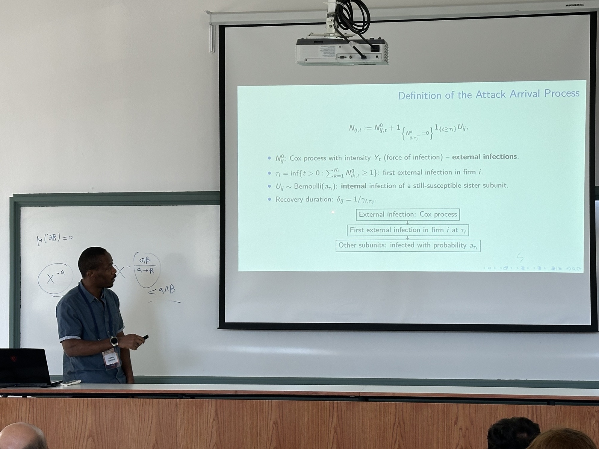

👋 About

I am Lionel Sopgoui, a Postdoctoral Researcher in Mathematical and Actuarial Finance at ENSAE Paris and the Institut Louis Bachelier. Together with Prof. Caroline Hillairet and Prof. Olivier Lopez, I apply mathematical tools — such as Hawkes processes, contagion and epidemiological models, and extreme value theory — to model and quantify cyber risks for finance and cyber insurance. Previously, I completed a PhD in Mathematical Finance at Université Paris Cité, with research visits at Imperial College London and work in the Risk division at BPCE S.A. My dissertation focused on applications of probability and stochastic control in economic modelling, climate transition risk, and credit risk. I was co-advised by Jean-François Chassagneux, Antoine (Jack) Jacquier, and Smail Ibbou.
🚧 Ongoing work
- Real Estate Pricing under Transition Risk: A Real Option Approach, with Jean-François Chassagneux.
- A major–minor MFG with common jumps and impulse control for optimal cybersecurity investment, with Caroline Hillairet.
📄 Publications
Preprints
Lionel Sopgoui. “Climate-Vulnerable Firms, Credit Supply, and Cascading Failures: An Agent-Based Model.” SSRN.6879501, 2026. (Submitted to Economic Modelling).
Caroline Hillairet, Olivier Lopez, and Lionel Sopgoui. “A stochastic SIR model for cyber contagion: application to granular growth of firms and to insurance portfolio.” hal-05555552, version 1 (17-03-2026). (Submitted to Scandinavian Actuarial Journal).
Lionel Sopgoui. “Modeling the impact of climate transition on real estate prices.” arXiv:2408.02339, 2024. (Submitted to Journal of Climate Finance).
2026
2025
Lionel Sopgoui. “Impact of the carbon price on credit portfolio’s loss with stochastic collateral.” Quantitative Finance, 1–30, 2025.
Géraldine Bouveret, Jean-François Chassagneux, Smail Ibbou, Antoine Jacquier, Lionel Sopgoui. “Propagation of a carbon price in a credit portfolio through macroeconomic factors.” SIAM Journal on Financial Mathematics, 16(2):545–605, 2025.
2024
Lionel Sopgoui. “PhD thesis: Pricing and hedging of transition risk in Credit Portfolio.” Université Paris Cité, 2024.
2021
Lionel Sopgoui. “Les essais de Paukémil, l’intrus universel.” Books on Demand, 2021.
🌍 Talks
Upcoming
Mathematical Advances on Emerging Risks 2026, 3–6 November — “A major–minor MFG with common jumps and impulse control for optimal cybersecurity investment.” Mexico City, Mexico.
2026
7th European Actuarial Journal Conference, 9–11 September — “A stochastic SIR model for cyber contagion: from granular growth of firms to insurance portfolio.” Istanbul, Turkey, Presentation.
CEMRACS 2026 with Dorinel Bastide, Stéphane Crépey, Simone Pavarana, and Ryan Timeus, 20 July–14 August — “Dynamic Top-Down Model for Financial Loss Distribution Under Climate, Credit & Market Risks.” CIRM Marseille, France.
XIII Bachelier World Congress of the Bachelier Finance Society, 29 June–3 July — “A stochastic SIR model for cyber contagion: from granular growth of firms to insurance portfolio.” Bologna, Italy.
Scandinavian Actuarial Conference 2026, 15–16 June — “A stochastic SIR model for cyber contagion: from granular growth of firms to insurance portfolio.” Stockholm University, Stockholm, Sweden.
Financial Risks International Forum 2026, 30–31 March — “A stochastic SIR model for cyber contagion: from granular growth of firms to insurance portfolio.” Palais Brongniart, Paris, France.
XXVII Workshop on Quantitative Finance, 30–31 March — “A stochastic SIR model for cyber contagion: from granular growth of firms to insurance portfolio.” Bergamo, Italy.
2025
Quantitative Methods in Finance 2025, 16–19 November — “Impact of the Carbon Price on Credit Portfolio’s Loss with Stochastic Collateral.” University of Technology Sydney (UTS), Sydney, Australia, Presentation.
Séminaire “Actuariat & Finance” - IRA-ISFA-ENSAE-CNAM-ISUP, 21 November — “A stochastic SIRS model for cyber contagion: application to firms’ growth and insurance portfolios.” Institut du Risque & de l’Assurance, Le Mans, France.
SIAM Conference on Financial Mathematics and Engineering (FM25), 15–18 July — “Modeling the Impact of Climate Transition on Real Estate Prices.” Miami, Florida, U.S.
EconophysiX seminar, 8 April — “A top-down and a bottom-up approach for financial fragility under climate change.” Capital Fund Management, Paris, France, Presentation.
UCLA - Financial and Actuarial Mathematics Seminar, 20 February — “Pricing and hedging of climate transition risk in Credit Portfolio.” UCLA (online), Presentation.
London-Oxford-Warwick Financial Mathematics Workshop, 9–10 January — “Modeling the impact of climate transition on real estate prices.” University of Oxford, Oxford, England.
2024
9th Green Finance Research Advances, 9–10 December — “Impact of climate transition on credit-portfolio loss with stochastic collateral.” Auditorium — Banque de France, Paris, France.
Groupe de Travail - Risques Climatiques, 17 October — “Modeling the impact of climate transition on real estate prices.” CACIB, Montrouge, France.
12th Bachelier World Congress of the Bachelier Finance Society, 8–12 July — “Propagation of carbon taxes in credit portfolio through macroeconomic factors.” FGV EMAp, Rio de Janeiro, Brazil.
XXV Workshop on Quantitative Finance, 11–13 April 2024 — “Impact of climate transition on credit-portfolio loss with stochastic collateral.” Università di Bologna, Bologna, Italy.
Séminaire Bachelier, 9 February — “Impact of climate transition on Loss Given Default with stochastic collaterals.” Institut Henri Poincaré, Paris, France.
2023
8th Green Finance Research Advances, 13–14 December — “Propagation of carbon taxes in credit portfolio through macroeconomic factors.” Auditorium — Banque de France, Paris, France.
European Summer School in Financial Mathematics, 4–8 September — “Propagation of carbon taxes in credit portfolio through macroeconomic factors.” Delft University of Technology, Delft, The Netherlands.
London/Oxford/Warwick Financial Mathematics Workshop, 12–13 July — “Diffusion of carbon price in credit portfolio through macroeconomic factors.” King’s College London, London, England, Presentation.
Groupe de travail des thésards du LPSM, 30 May — “Propagation of carbon tax in credit portfolio through macroeconomic factors.” Sorbonne Université, Paris, France.
Quantitative Finance Workshop 2023, 20–22 March — “Diffusion of carbon price in credit portfolio through macroeconomic factors.” Università di Cassino, Gaeta, Italy.
2022
London-Paris Bachelier Workshop (6th edition), 15–16 September — “Diffusion of carbon price in a credit portfolio through macroeconomic factors.” Institut Henri Poincaré, Paris, France.
💡 Teaching
I have worked as a teaching assistant for the following courses:
- Financial Mathematics at ENSAE Paris: first-year master’s students — Introduction to financial derivatives, valuation in financial markets, pricing by trees, stochastic calculus, and the Black–Scholes model.
🎓 Education
PhD in Mathematical Finance Université Paris Cité / Imperial College London
Advisors: Jean-François Chassagneux, Antoine (Jack) Jacquier, and Smail Ibbou
Paris, France September 2021 – November 2024
- Thesis: Pricing and hedging of transition risk in Credit Portfolio.
M.S. in Financial Mathematics: Statistics and Finance Ecole Polytechnique - ENSAE Paris
Palaiseau, France September 2019 – December 2020
- Thesis: Machine Learning for Finance.
Engineering Degree in Statistical Modelling and Applications Telecom SudParis
Evry, France September 2017 – December 2020
- Thesis: Machine Learning for Finance.
BSc in Mathematics and Computer Science National Advanced School of Engineering
Yaoundé, Cameroon September 2012 – July 2015
🏆 Projects
Trading algorithms on stocks (via IBKR API) and on cryptocurrencies (via Binance API): building statistical-arbitrage strategies, implementing them in Python, and deploying via Interactive Brokers.
Deep and reinforcement learning for Black–Scholes option pricing and hedging: using modern deep- and reinforcement-learning tools to estimate option values and hedging strategies.
Correlation between economic conditions and stock-market performance (Python): exploratory analyses (linear regression) to study links between market indices (S&P 500) and macroeconomic indicators (inflation, unemployment, interest rates).
Statistical inference and ML models on DAX and EURO STOXX futures: developing machine-learning-based trading strategies.
💾 Resume
🎳 Hobbies
- Regular runner and tennis player.
- Writer and philosopher.
- Fan of 🏀 basketball (Golden State Warriors), 🎾 tennis (Novak Djokovic), and 🚴♀️ cycling.
- Traveler 🧳.